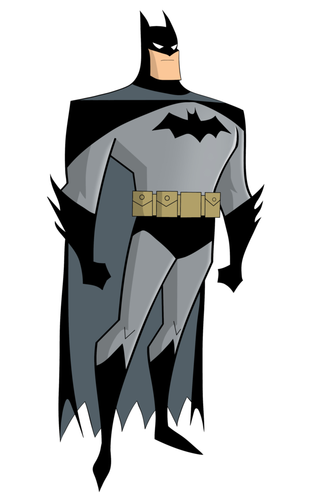
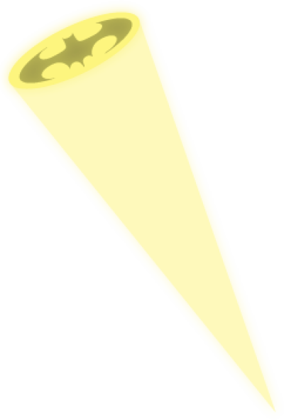
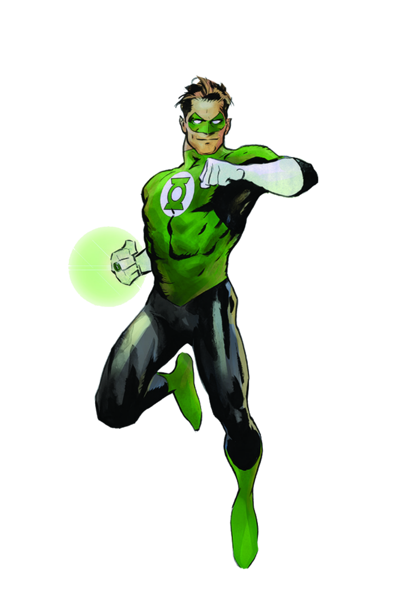
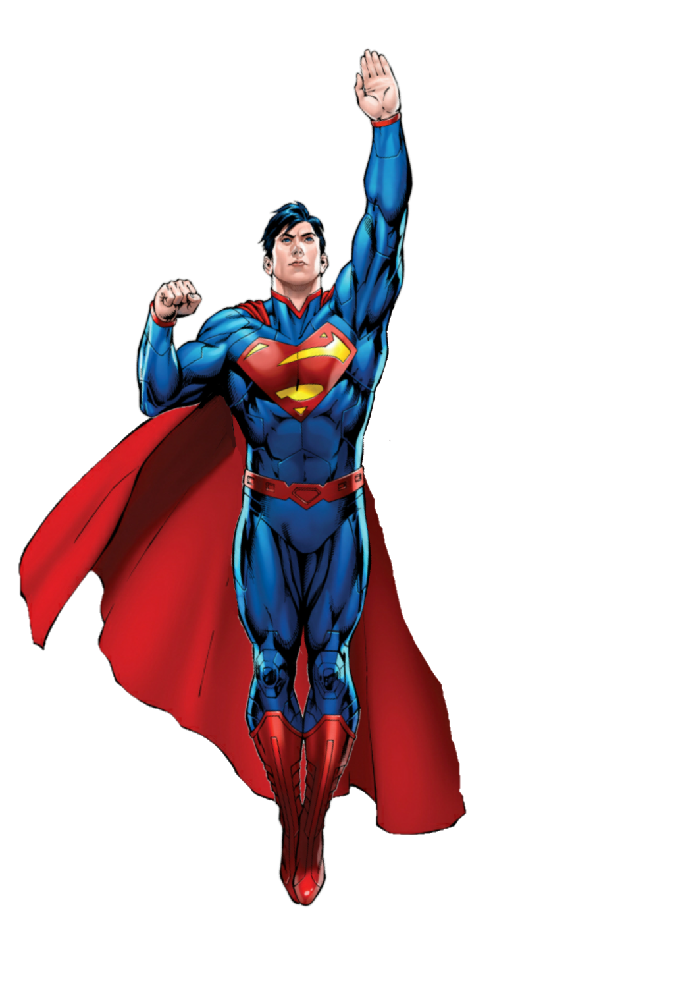
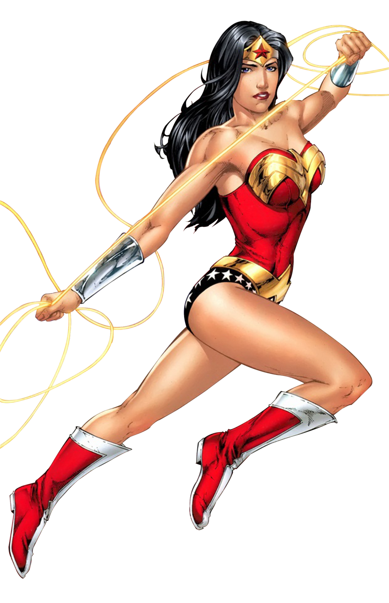

Batman has dedicated his life to an endless crusade, a war on all criminals in the name of his murdered parents, who were taken from him when he was just a child. Since that tragic night, he has trained his body and mind to near physical perfection to be a self-made Super Hero. He's developed an arsenal of technology that would put most armies to shame. And he's assembled teams of his fellow DC Super Heroes, like the Justice League, the Outsiders and Batman, Incorporated.
A playboy billionaire by day, Bruce Wayne’s double life affords him the comfort of a life without financial worry, a loyal butler-turned-guardian and the perfect base of operations in the ancient network of caves beneath his family’s sprawling estate. By night, however, he sheds all pretense, dons his iconic scalloped cape and pointed cowl and takes to the shadowy streets, skies and rooftops of Gotham City.

Hal Jordan’s life was changed twice by crashing aircraft. The first time was when he witnessed the death of his father, pilot Martin Jordan. The second was when, as an adult and trained pilot himself, he was summoned to the crashed wreckage of a spaceship belonging to an alien named Abin Sur. Abin explained that he was a member of the Green Lantern Corps, an organization of beings from across the cosmos, armed with power rings fueled by the green energy of all willpower in the universe. Upon his death, Abin entrusted his ring and duties as the Green Lantern of Earth’s space sector to Hal Jordan.
Hal’s life as a Green Lantern has not been easy. He’s had to fight not only enemies, but often friends, colleagues and loved ones. But despite the strain his Green Lantern identity has put on his life, Hal is an honest man who can operate without fear, and is always willing to protect those in need—whether alone, with the Corps or alongside the Justice League and Earth’s other Super Heroes. For Hal has sworn the oath of every Green Lantern—that no evil will escape his sight.

The mysterious power known as the Speed Force is an energy field that has, over the centuries, granted incredible powers of velocity to certain heroes. The most famous of these is the Flash, also known as the Fastest Man Alive. Ever since the days of World War II, there has been a man clad in red who can run at impossible speeds, using his power to save lives and defend those who cannot defend themselves. All between the ticks of a second.
In the 1940s, college student Jay Garrick acquired his super-speed abilities in a random lab accident and became the first DC Super Hero to go by the name the Flash. Years later, Jay was succeeded by police scientist Barry Allen, until Barry’s former kid partner Wally West took up the mantle at a time when Barry was considered dead. But, when Barry returned, he became the Flash once again. All three generations of speedsters have been cornerstone members of both the Justice Society and Justice League.

From his blue uniform to his flowing red cape to the "S" shield on his chest, Superman is one of the most immediately recognizable and beloved DC Super Heroes of all time. The Man of Steel is the ultimate symbol of truth, justice, and hope. He is the world's first Super Hero and a guiding light to all.
The tip of the spear in a revolution that would change the landscape of pop culture, Superman has spent the last eighty years redefining what it means to stand for truth, justice and the American way. The last survivor of the doomed planet Krypton, raised in the quiet heartland of Smallville, Kansas, Superman is as much a legend as he is a man: the gold standard of heroism, compassion and responsibility.

One of the most beloved and iconic DC Super Heroes of all time, Wonder Woman has stood for nearly eighty years as a symbol of truth, justice and equality to people everywhere. Raised on the hidden island of Themyscira, also known as Paradise Island, Diana is an Amazon, like the figures of Greek legend, and her people's gift to humanity.
As Themyscira's emissary to Man's World, Diana has made it her duty to lead by example, even if the differences between her birthplace and new home sometimes present hurdles for her to jump. She has come to represent the possibility and potential of life without war, hate or violence, and she is a beacon of hope to all who find themselves in need. She stands as an equal among the most powerful Super Heroes, with a sense of purpose to protect the world from injustice in all forms.